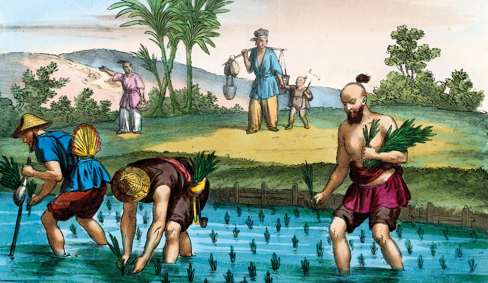
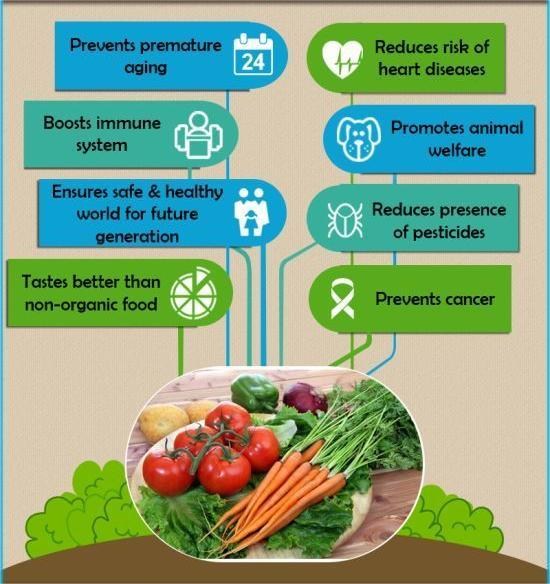
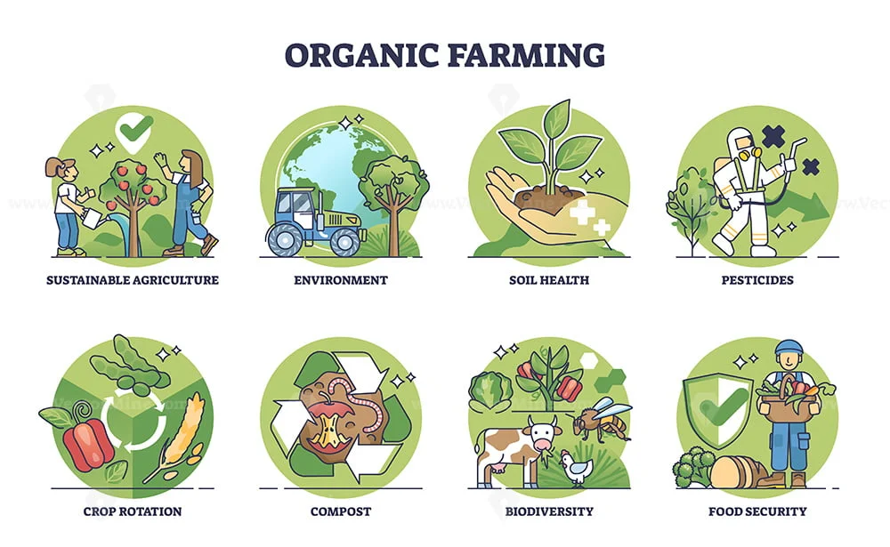
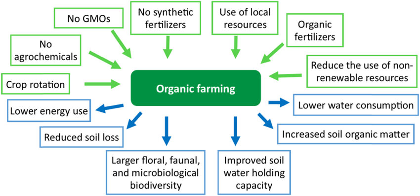

Exploring Organic Farming Methods
Organic farming methods prioritize sustainable and environmentally friendly practices, avoiding synthetic pesticides and fertilizers. These methods focus on enhancing soil health through crop rotation, composting, and the use of green manure. Organic farming also promotes biodiversity, using natural pest predators and encouraging a diverse ecosystem. By emphasizing renewable resources and conservation, organic farming aims to produce healthier food while minimizing the ecological footprint. This approach not only supports sustainable agriculture but also helps maintain the long-term health of our planet.
Read More

The Impact of Organic Farming on the Environment
Organic farming positively impacts the environment by reducing chemical runoff and soil contamination, thanks to its avoidance of synthetic pesticides and fertilizers. It enhances soil fertility and structure through natural practices like composting and crop rotation. This method also promotes biodiversity, supporting a wider range of plant and animal species. By using sustainable techniques, organic farming helps to conserve water and reduce greenhouse gas emissions. Overall, it fosters a healthier ecosystem and contributes to the fight against climate change.
Read More

Benefits of Organic Produce
Organic produce offers numerous benefits, including higher nutritional value and the absence of synthetic pesticides and fertilizers. Consumers can enjoy fruits and vegetables that are free from harmful chemicals, promoting better health and well-being. Organic farming practices also support sustainable agriculture, enhancing soil health and reducing environmental pollution. Additionally, organic produce often tastes fresher and more flavorful, as it is typically grown locally and harvested at peak ripeness. By choosing organic, consumers support eco-friendly farming practices and contribute to a healthier planet.
Read More

Transitioning to Organic Farming: Challenges and Opportunities
Transitioning to organic farming presents both challenges and opportunities. Farmers may face initial hurdles such as the high cost of certification, changing their farming techniques, and potential short-term yield reductions. However, these challenges are outweighed by numerous opportunities, including access to premium markets, improved soil health, and long-term sustainability. Organic farming also reduces dependency on synthetic chemicals, fostering a healthier environment. With growing consumer demand for organic products, farmers can benefit from increased market opportunities and contribute to a more sustainable agricultural future.
Read MoreOrganic Farming and Sustainable Agriculture
Organic farming and sustainable agriculture are closely intertwined, both focusing on long-term environmental health and resource conservation. Organic farming avoids synthetic inputs, enhancing soil fertility through natural methods like composting and crop rotation. This sustainable approach promotes biodiversity, water conservation, and reduces greenhouse gas emissions. By prioritizing renewable resources and ecological balance, organic farming supports resilient agricultural systems. Embracing organic practices not only ensures healthier food production but also fosters a more sustainable and eco-friendly future for agriculture.
Read More

Healthy Eating: Benefits of Choosing Organic
Choosing organic foods offers numerous health benefits, including reduced exposure to synthetic pesticides and chemicals. Organic produce is often richer in essential nutrients, providing a healthier option for your diet. Consuming organic foods supports better overall well-being and can lower the risk of certain health issues associated with chemical residues. Additionally, organic farming practices contribute to a healthier environment, promoting cleaner air, water, and soil. By opting for organic, you're making a positive impact on your health and the planet.
Read More